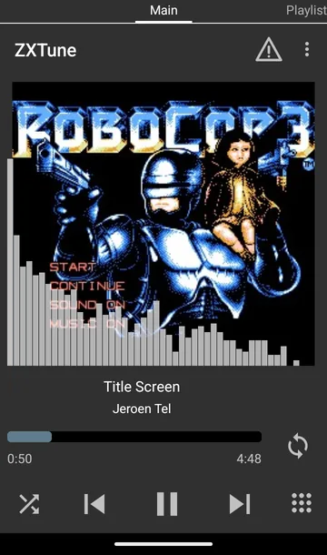
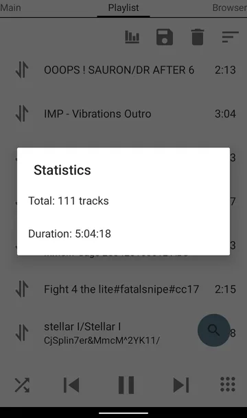
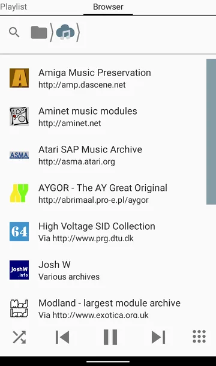

ZXTuneはコア(C++)を共有し、UIだけを各プラットフォームに最適化。デスクトップのフル機能、スマホの手軽さ、ブラウザの即時性、CLIの自動化 — どれも同じコアで鳴ります。
ブラウザだけで完結 • インストール不要 • PWA対応 • 開いた曲はオフラインでも再生
最も手軽なZXTune。 C++コアをEmscriptenでWebAssembly化し、AudioWorkletで途切れない合成を実現。サーバにファイルを送らず、ブラウザ内で完結してデコードするためプライベートかつ高速です。
player.html を開く.pt3 / .spc / .nsf / .sid / .vgm / .zip / .trd をドラッグ＆ドロップ▶ — スペクトラムを見ながら再生！player.html?url=… で共有も (zxtunes.com / HVSC は CORS 非対応のため不可)emscripten + AudioWorklet + WebAssembly + Canvas 2D。メインスレッドをブロックせず、出力デバイスのサンプリング周波数で合成 (補間は高品質 / 低品質 / なし)。
Windows / macOS / Linux • いちばん多機能なプレイヤー
パワーユーザー向けのフラッグシップ。 プレイリストの管理と検索、曲ごとのプロパティ編集、音声ファイルへの変換、音源ごとの細かな設定までを一つのウィンドウで。
公式サイト (zxtune.ru → zxtune.bitbucket.io) で Windows (x86_64 / ARM64)、macOS (Intel / Apple Silicon)、Linux (tar.gz / deb / rpm) 版が配布されています。ソースからは、Linux でシステムの boost と Qt を使うなら make system.zlib=1 -C apps/zxtune-qt でビルドします (BUILD.md)。
Android 4.1+ • オンラインカタログ統合 • ウィジェット / 着信音
ポケットの中のチップチューン図書館。 ローカルファイルに加え、zxtunes.com / ModLand / HVSC / modarchive 等のオンラインカタログを直接ブラウズ・再生・キャッシュ。



リポジトリの apps/zxtune-android/fastlane にある公式スクリーンショットです。
コンソール / スクリプト / サーバ • 軽量 • バッチ変換
端末で完結するミニマリスト。 GUI不要で再生・情報表示・変換・ベンチマーク。サーバでの自動変換や大量ファイルのバッチ処理に最適。
--wav などの出力先にファイル名のひな形 ([Author]、[Title] など) を指定--convert で raw / PSG / ZX50 / TXT / AY ダンプ / FYM に変換--index で曲の情報を CSV に書き出し--benchmark で描画の速さを計測--core-options などの指定を設定ファイル (--config) にまとめられますapps/zxtune123make system.zlib=1 (Linux、システムの boost を使う場合)bin/ 以下 (ビルド設定ごとのフォルダ)zxtune123 --helpインストール不要 — 今すぐ音を出してみよう。